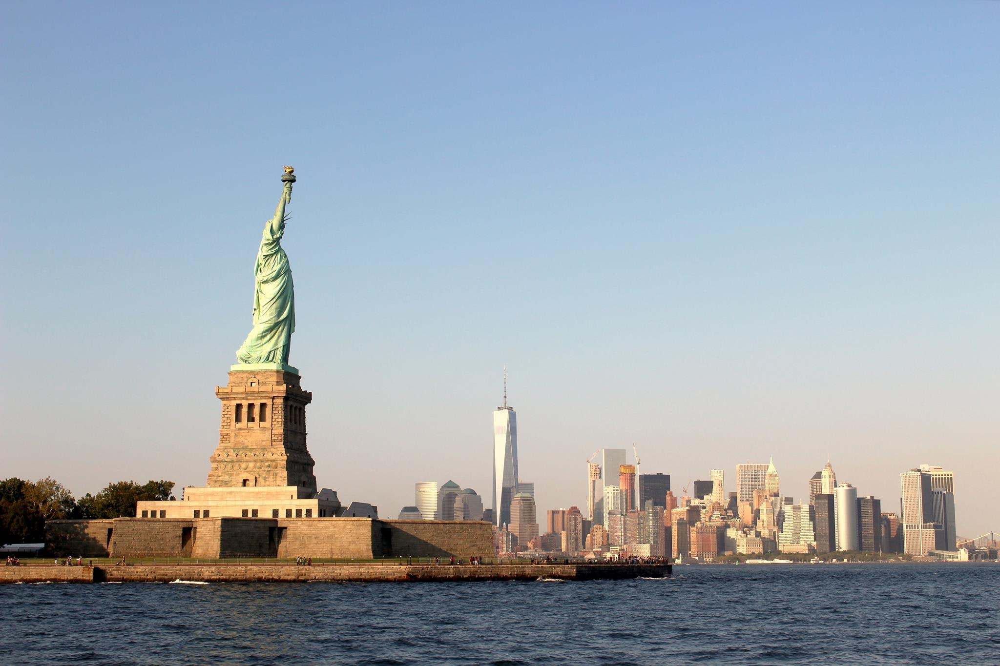

STATUE DE LA LIBERTE
La Liberté éclairant le monde, ou simplement Liberté, plus connue sous le nom de statue de la Liberté, est l'un des monuments les plus célèbres des États-Unis. Cette statue monumentale est située à New York, sur la Liberty Island, au sud de Manhattan, à l'embouchure de l'Hudson et à proximité d'Ellis Island. Pesant 204 tonnes et mesurant 92,9 mètres, elle est construite en France et offerte par le peuple français, en signe d'amitié entre les deux nations, pour célébrer le centenaire de la Déclaration d'indépendance américaine. La statue fut dévoilée au grand jour le 28 octobre 1886 en présence du président des États-Unis, Grover Cleveland. L'idée venait du juriste et professeur au Collège de France Édouard de Laboulaye, en 1865

La grâce de la perfection des proportions et la grandeur des motifs géométriques , qui renforcent l’assise de tout le complexe, ajoutent de la splendeur à la délicatesse de cette mance d’amour, de dévouement et de pureté, «Le statue de la liberté»!
.jpg)
.jpg)